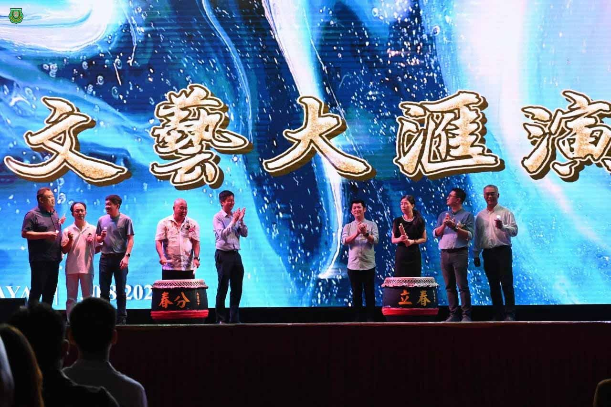
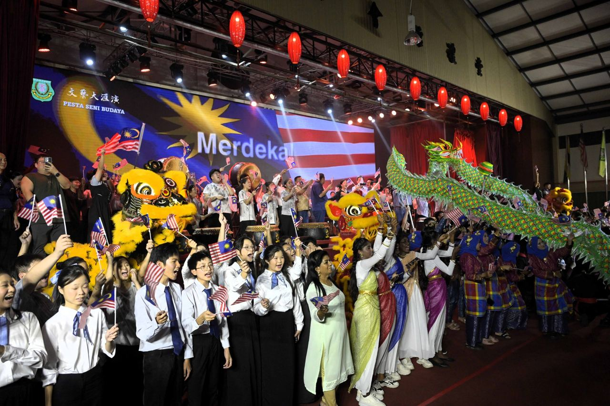
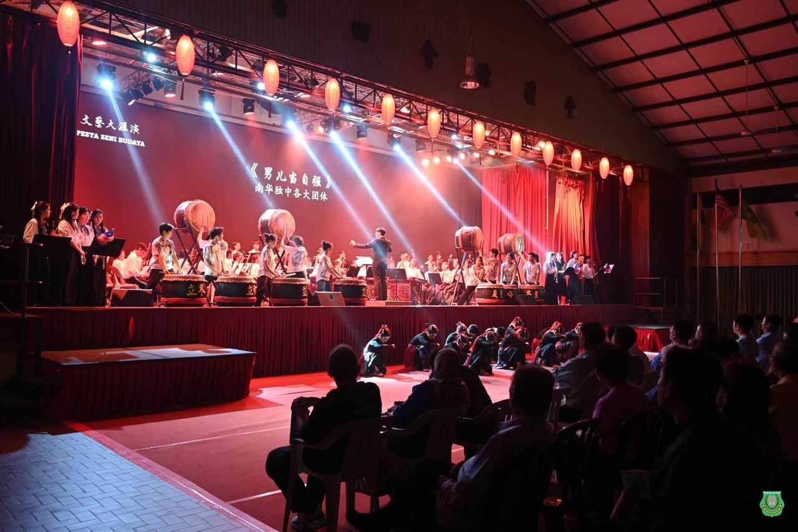
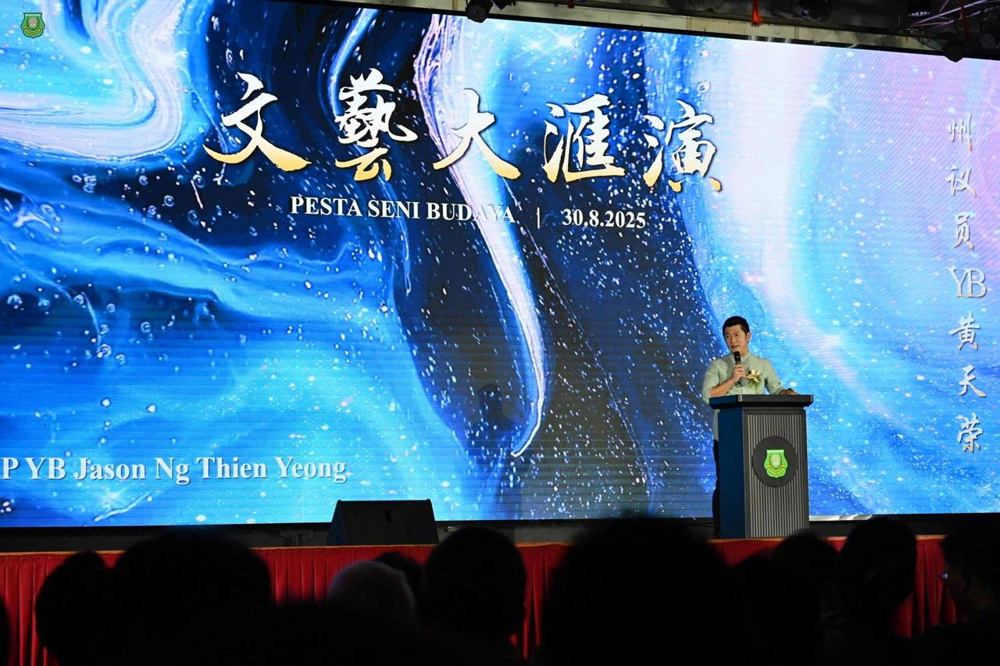
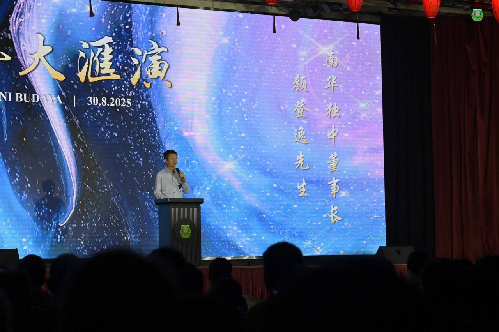
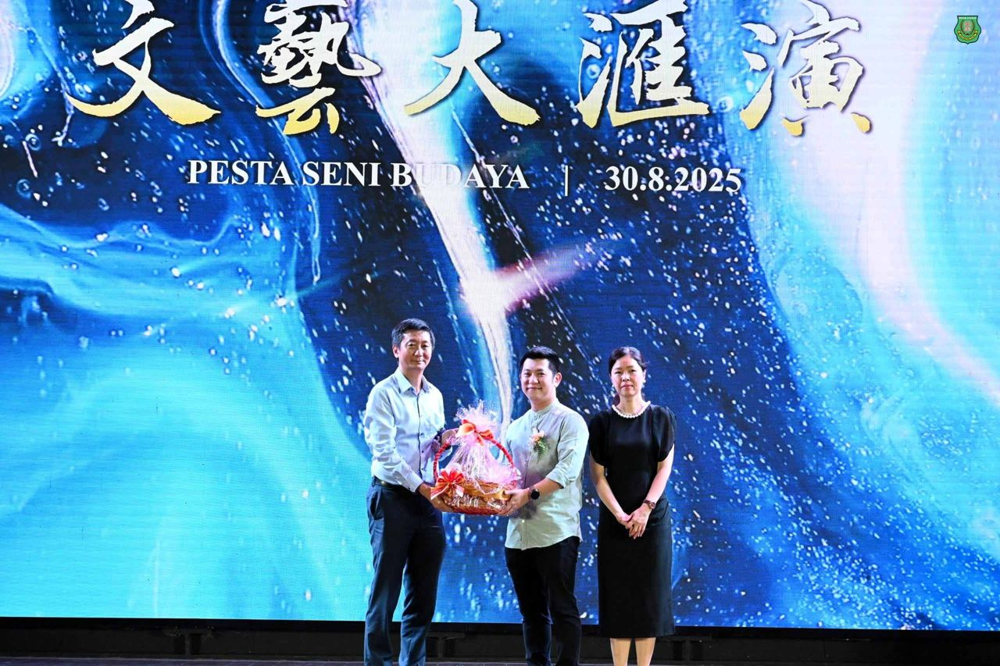
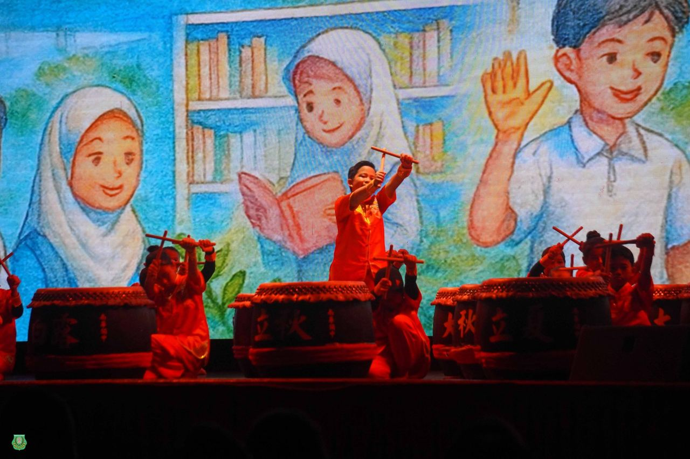
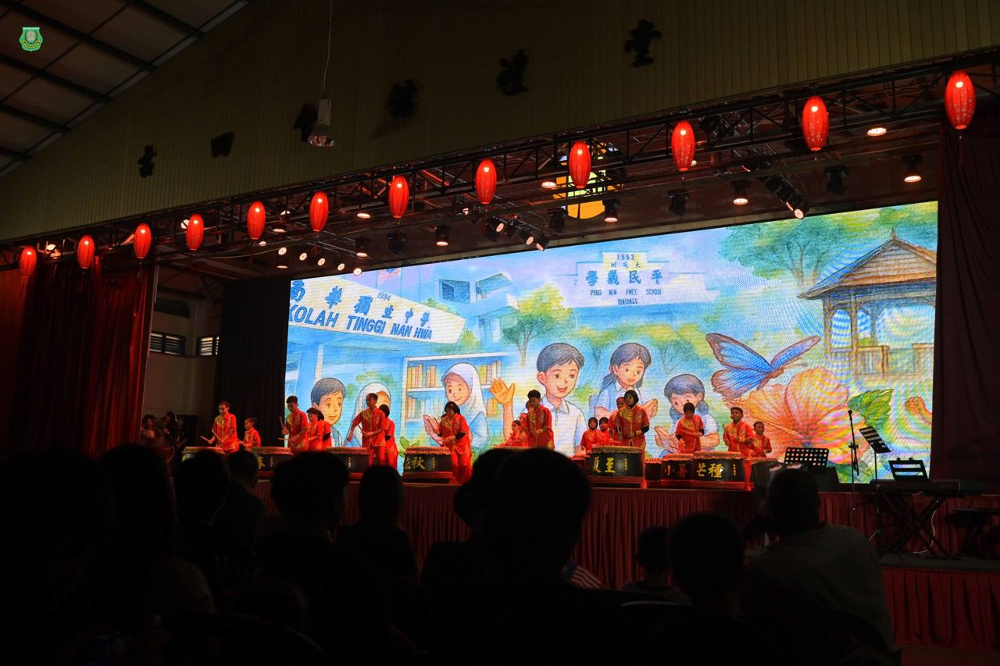

南华独中2025年文艺大汇演
南华独中2025年文艺大汇演
“#艺汇南华 · #共鸣大地”
赴约一场艺术与教育的盛宴
文化，是民族的灵魂；艺术，是心灵的殿堂更是归宿。2025年8月30日晚，南华独立中学大礼堂灯火辉映，一场以《艺汇南华·共鸣大地》为主题的文艺大汇演， 集结多元族群艺术形式，汇聚青春创意与文化传承的光芒，是一场彰显跨艺术、跨文化、跨族群精神的教育艺术盛典，师生携手各节流各族群的中小学学生为社区呈献一场教育盛宴。
演出荟萃华乐、管乐、合唱、二十四节令鼓、龙狮、相声、马来武术与三大民族舞蹈，学生们用汗水与热情，将多元文化的色彩铺展成一幅壮丽画卷。那一刻，艺术不再只是舞台上的表演，而是生命成长的回响。
#共享美好，#共创大同
南华独中董事长颜登逸先生在致辞中强调，学校办学方针“学会读书·学会做人”，正是要让学生在实践中发挥天赋、发掘热忱。大汇演是最好的平台，学生在筹备中不断试错，从错误里成长，也因而推开一扇扇兴趣的窗，望见窗外无垠的精彩世界。他更指出，真正的美好不只属于校园，而应与社区连结，共享教育资源，共同实现“美美与共，天下大同”的教育理想。
#培养学子，#孕育领袖
阿斯达卡州议员YB黄天荣在致辞时表示，南华独中一直坚守“学会读书，学会做人”的理念，培养曼绒区学子，也为国家孕育了一批批未来领袖。他寄望学生们毕业后，不仅在事业上有所成就，更能成为各自领域的引路人，并有更多青年在马来西亚这片土地上扎根耕耘，造福社会。
#艺术底蕴，#教育回响
这是一场美育的盛宴，也是教育的诗篇。孩子们在舞台上尽情舒展，如花般绽放、如树般挺立。每一位南华学子因文化而生根，因艺术而丰盈，因教育而走向最光亮的未来。文艺大汇演隔日适逢马来西亚第68岁国庆生日，全场高唱爱国歌曲《Tanggal 31》谢幕，观众也一同起立挥动国旗，全场再无表演与观看、种族、文化与语言之分，汇成波澜壮阔的艺术与教育的回响。







